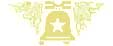

|
North America >
USA >
Texas >
Bell Mountain Vineyards

Bell Mountain Vineyards
Fredricksburg, TX
|
Bell Mountain enjoys the distinction of being the first AVA in Texas, declared in 1986, ten years after the winery was founded. They make wine under two labels: 1) Bell Mountain, which are all estate bottled varietals, and 2) Oberhof Winery, which are non-vintage, non-varietal wines.
|
www.bellmountainwine.com
Bell Mountain Vintages:
Dry Riesling 2005
Late Harvest Riesling 2005
Ros� of Cabernet NV
Cabernet Sauvignon 2002
Merlot 2005
Reserve Pinot Noir 2001
Oberhof Winery Wines:
Liebchen
KrisKindel
|
|